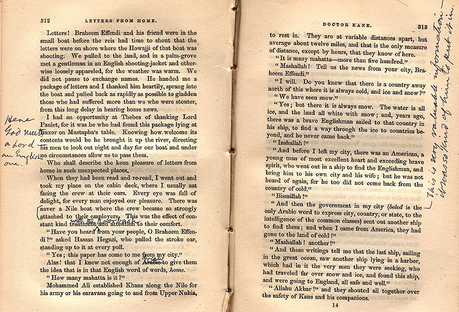

Below
: in the two interlineated comments on page 312 MT adds "with the kourbash," or whip, to Prime's boast about how much his native crew liked him, and replaces "Arabic" with "Irish."

Courtesy of The Mark Twain House & Museum, Hartford, CT